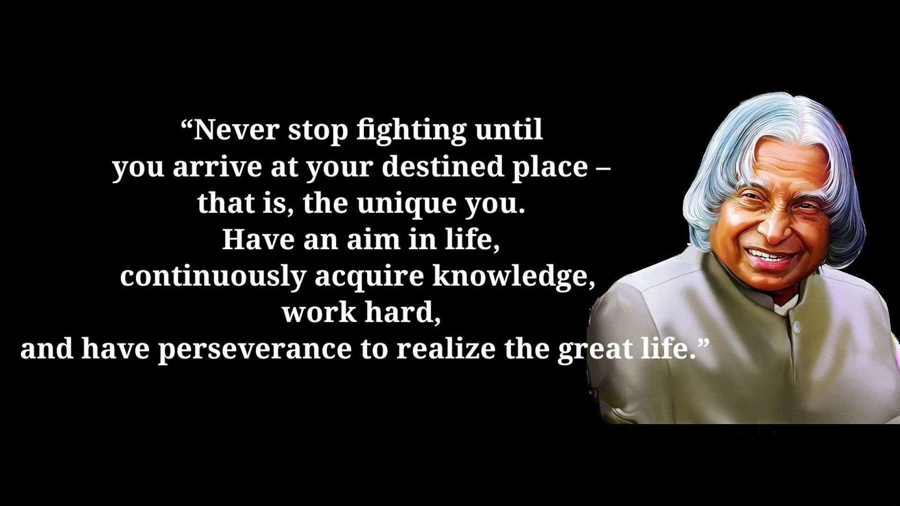

Biography
- Scientist and Visionary: Dr. Kalam significantly shaped India’s space and missile programs.
- Missile Man of India: Celebrated for developing India's ballistic missiles and technologies.
- 11th President of India: Known as the "People's President" for his humble leadership.
- Architect of India’s Missile Program: Spearheaded the Integrated Guided Missile Development Program.
- Key Contributor to Pokhran-II: Played a vital role in India's 1998 nuclear tests.
- Inspirational Educator: Spent years motivating students and the youth of India.
- Author and Thought Leader: Wrote bestsellers like Wings of Fire and Ignited Minds.
- Bharat Ratna Recipient: Received India's highest civilian honor.
- Youth Icon: Inspired millions with his vision and dedication.
- Legacy of Service: Embodied humility, dedication, and commitment to progress.
Awards
- Bharat Ratna (1997): India's highest civilian award, recognizing exceptional service to the nation.
- Padma Vibhushan (1990): India's second-highest civilian award, for distinguished contribution to public affairs.
- Veer Savarkar Award (1998): For his valuable contributions to the field of science.
- Padma Bhushan (1981): India's third-highest civilian award, for distinguished service of a high order.
- Indira Gandhi Award for National Integration (1997):For his relentless efforts to promote harmony and national unity.
- Ramanujan Award (2000): For his contributions to science and technology.
- King Charles II Medal (2007): Awarded by the Royal Society, UK, recognizing his contributions to science and engineering